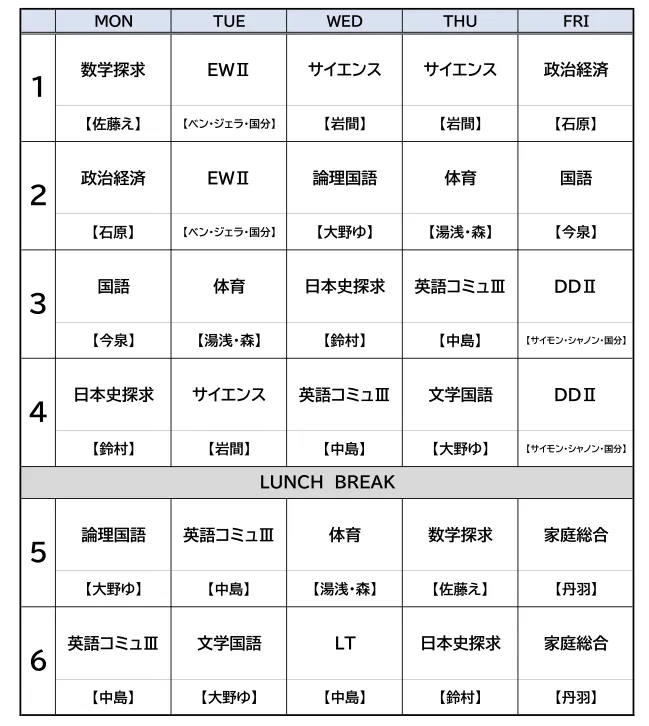

情報が氾濫し、AIが瞬時に答えを提示する現代において、真の価値を持つのは「思考すること」そのものです。
Deep Thinkerとは、与えられた知識をただ鵜呑みにするのではなく、自ら問いを立て、論理的に答えを導き出す人のこと。この一年、みんなが自らの足で立ち、自らの頭で考え抜く「自立」した存在へと成長することを心から願っています。深く考え、行動する。それが未来を切り拓く唯一の道です。
みんな、初めまして！この4月から安城学園にやってきた「ナカシー」です。昔、カナダのバンクーバーのコーヒーショップで働いていたとき、「言葉が通じるだけで、自分の世界が国境を越えてどこまでも広がる面白さ」を肌で感じました。その経験から、国際交流コミュニティ「Global Classroom」の運営も行っています。
3年2組のみんなにも、英語を「テストの点数のため」ではなく、「自分の世界と可能性を広げる最強のツール」として楽しんでほしいと願っています。何かに挑戦したいとき、壁にぶつかるとき、いつでも気軽に話しかけてね。1年間、一緒に最高のクラスを創っていきましょう！
